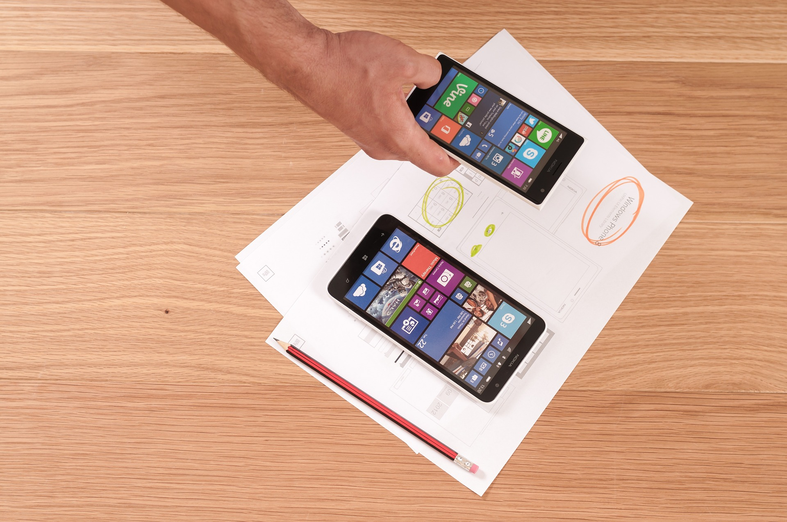

Articles
A curated selection of articles, blog posts & case studies, covering User Experience Design concepts and practices.
A Beginner's Guide To AB Testing: An Introduction
A/B testing is a fantastic method for figuring out the best online promotional and marketing strategies for your business. It can be used to test everything from website copy to sales emails to search ads.